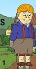

Mr. Pickles
Stephen Klancher
...has seen 1
...has seen 0 hours
...has not seen 0.6 hours

Timeline
Most Recent:
Pilot
First Unseen:
Tommy's Big Job (# 2)
...has seen 1
...has seen 0 hours
...has not seen 0.6 hours
Timeline
Most Recent:
Pilot
First Unseen:
Tommy's Big Job (# 2)
